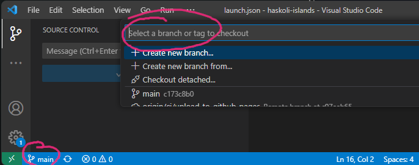

3. Búa til nýtt verkefni
3.1. Nýtt Git-branch
Það telst ekki góð latína að vinna á main-greininni á Git. Það er því ráðlagt að búa til nýja grein (branch) fyrir nýja verkefnið. Í VSCode er smellt á Main neðst til vinstri, skrifið nafnið á verkefninu (ef um er að ræða nótur fyrirnámskeið þá er númerið á því upplagt nafn) og smellið á Create new branch. Framvegis er svo hægt að fylgjast með neðst til vinstri í hvaða grein er verið að vinna.

Hér er aðeins farið í það hvernig unnið er með Git í VSCode
3.2. Afrita tmp001
Nú þarf að afrita möppuna tmp001g sem er í haskoli-islands/projects-möppunni yfir í nýja möppu svo hægt sé að byrja að
cp projects/tmp001g projects/new001g
þar sem new001g er heitið á nýja verkefninu.